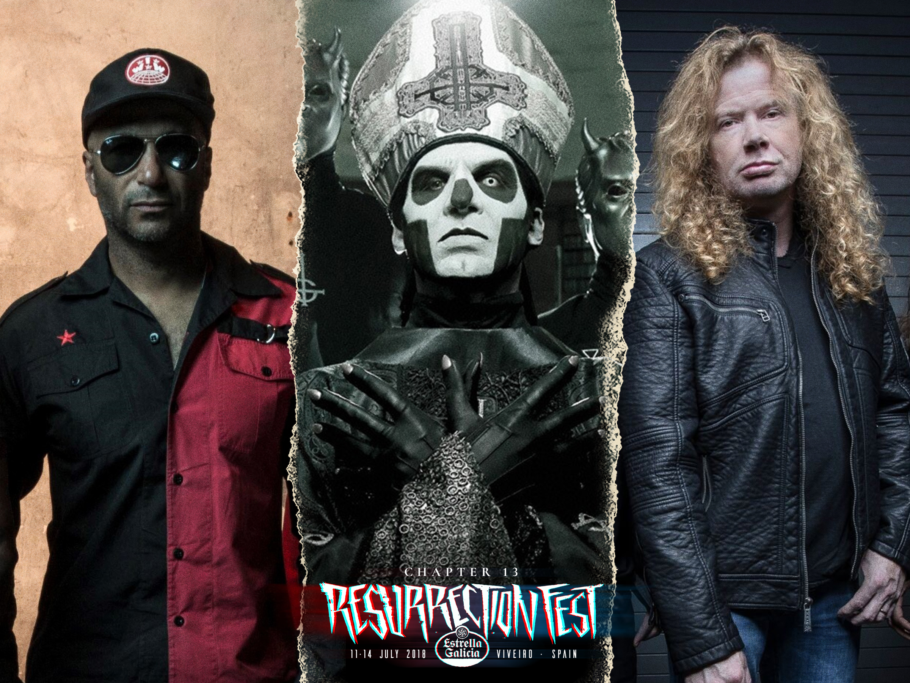

Resurrection Fest Galicia 2018
Nos alegra poder anunciar nuevas bandas para el cartel del festival para este año. En primer lugar, anunciamos a nuevos cabezas de cartel para el festival que se unen a la parte alta ya comandada por KISS, Scorpions y Stone Sour, ¡y ya estamos seguro de que será la mayor edición hasta la fecha! ¡Comenzamos con nuestro regalo de Navidad para todos vosotros! Por un lado, tendremos a una banda que promete un concierto brutal por todo lo alto, reivindicativo como pocos: Prophets of Rage, el super-grupo formado por miembros de Rage Against The Machine, y las voces de Public Enemy y Cypress Hill, presentarán su primer disco, y además, cantarán todos los himnos de sus bandas que harán saltar por los aires a todo Viveiro. ¡Estad preparados para los solos de Tom Morello y gritar “Killing In The Name Of”! Será inolvidable. Seguimos con una de las bandas que más han crecido en los últimos años y que más en forma están en este momento: ¡por fin tendremos a Ghost! El gran Papa Emeritus y sus Nameless Ghouls pisarán por primera vez Viveiro, y lo harán en una única fecha exclusiva para toda la Península, prometiendo una buena misa satánica para todos los feligreses resus. “Square Hammer”, “Year Zero”, “Cirice”, “He Is”… ¡No pararemos de cantar oraciones! No paramos ahí, porque uno de los del Big Four estará en Viveiro: el gran Dave Mustaine y sus rejuvenecidos Megadeth vuelven tras ser cabezas absolutos de la edición de 2014. Hoy en día con el virtuoso Kiko Loureiro en el hacha y Dirk Verbeuren a la batería, presentando su último trabajo “Dystopia” e interpretando todos los clásicos. No faltará thrash en esta edición del Resu. ¡Aguante, Megadeth! Nos vamos a por una banda legendaria que no necesita presentación ninguna y que gracias a ellos, ¡esto existe! 2006, 2010, 2014 y ahora de nuevo 4 años después en 2018 tendremos en Viveiro al hardcore en forma de banda, Sick of it All. También desde Reino Unido, Paradise Lost nos visitarán por primera vez para deleitarnos con su último trabajo, “Medusa”, y a demostrarnos por qué son uno de los pioneros del death-doom. Desde EE.UU., una delicatessen para los gustos más selectos: Wolves In The Throne Room traerán su post-black metal ambiental para llevar a cabo uno de los conciertos más místicos de esta edición, ¡estamos seguros! “Thrice Woven” es el nombre de su último álbum y tenemos muchas ganas de vivirlo en directo. En el Desert Stage no estarán solos, porque Eyehategod, una de las bandas más representativas de la escena NOLA también vendrán al festival con su sludge metal característico. A su vez, Process of Guilt, de Portugal, traerán su doom-industrial-sludge en forma de muralla sonora. Los amantes del hardcore tampoco se podrán perder a Turnstile en su primer concierto en España hasta la fecha en exclusiva y Stray From The Path, que nos prometen que pondrán patas arriba el Ritual Stage, ni al crust-punk de Wolfbrigade. Authority Zero tampoco han querido perder la oportunidad de regresar a Viveiro y se unen al cartel, ¡ya se les echaba de menos! Desde Japón, ¡una banda de metalcore muy joven pero con un futuro prometedor: Crystal Lake! Su último trabajo “Apollo” ya es todo un éxito en la escena. Si sois máis de djent y del metal progresivo, Oni son vuestra banda. Ambas nos dejarán el cuello destrozado con sus breakdowns. En lo nacional tampoco nos descuidamos, porque contaremos con grandes y selectos nombres. Niña Coyote Eta Chico Tornado y nuestras gallegas Agoraphobia nos darán mucha caña en el Desert con su rock y stoner. Los gallegos Cuchillo de Fuego tocarán por primera vez en el festival, mientras que los vascos Rise to Fall regresan tras 2013. Los también gallegos Barbarian Prophecies, Golpe Radikal, Amenaza de Muerte, Vörtex y Noah Histeria conforman las incorporaciones de hoy, dejando unas pocas últimas bandas en el cartel para más adelante.